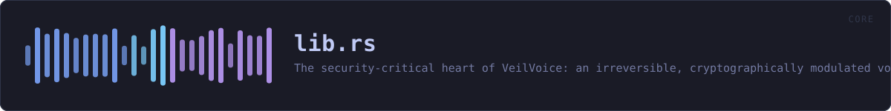

crates/veilvoice-core/src/lib.rs
veilvoice-core · 68 lines · read the source
The security-critical heart of VeilVoice: an irreversible, cryptographically modulated voice de-identification engine.
What it guarantees (and what it deliberately does not)
VeilVoice destroys the biometric voiceprint — fundamental pitch, formant structure, timbre, accent and micro-timing — so that neither software nor a human can re-identify the speaker or reconstruct the original waveform. It does not hide the words: intelligibility is preserved on purpose, because a scrambler you cannot understand or transcribe is useless. "Fill the whole spectrogram with white noise" and "stay transcribable" are mutually exclusive; see docs/WHITEPAPER.md for the full argument.
Accent
[AccentConfig] additionally maps every speaker onto one canonical pitch register, vocal-tract scale and long-term spectrum, so the melody and colour of an accent — along with two of the strongest biometric features there are — do not survive. What no signal-level transform can remove is the segmental side of an accent: which phonemes were actually produced. At that level the accent and the words are the same thing, and changing it means changing what was said. See [AccentConfig] for the full argument and the limit, which the whitepaper must state rather than overclaim.
Why it is one-way
Every STFT frame has its measured phase discarded and resynthesised from scratch (see [spectral]). The original excitation phase — which encodes the precise waveform and a speaker's micro-timing — is never stored and never reused, so no downstream process can recover it. On top of that, the pitch and formant shifts are driven every frame by a ChaCha20 CSPRNG ([modulation]) whose seed never leaves the process and is zeroized on drop, so there is not even a single fixed transform to invert.
Example
use veilvoice_core::{Deidentifier, DeidConfig};
let mut deid = Deidentifier::new(DeidConfig::default()).unwrap();
let input = vec![0.0f32; 4800];
let output = deid.process_vec(&input);
assert_eq!(output.len(), input.len());
// Live processing cost, e.g. for a latency read-out:
let _ms = deid.stats().last_block_ms();WHAT CALLS WHAT
This file defines no functions of its own.
ITEMS
| Item | Line | Documentation |
|---|---|---|
VERSION pub const | 68 | Crate version, surfaced in the About panel. |